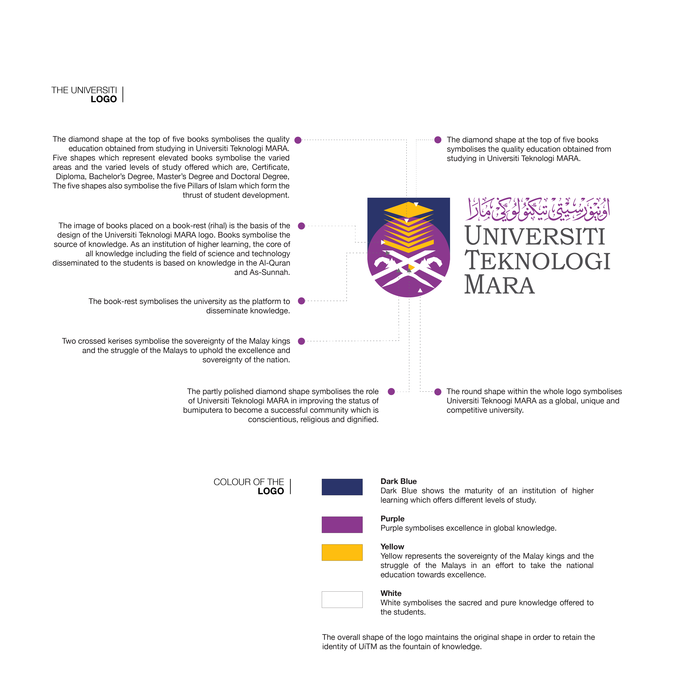

The Tombak Agung consists of a pair of long lances, one with a bamboo leaf-shaped blade, another with a five-curved blade which represent religion, knowledge and personality values as well as the sovereignty of the Malay society and the nation. The overall motif on the shaft of the spear is adapted from a design of a dome to symbolise UiTM as a
font of knowledge, disseminating and receiving knowledge according to the law of knowledge towards creating the good and banishing the evil based on religious teachings particularly among the undergraduates, all for the religion, the race and the nation.
The blade with five curves represents the five Pillars of Islam while the bamboo leaf-shaped blade symbolises the rich traditional Malay art. The decoration on the shaft starts with a traditional silver head-dress which symbolises the responsibility of the Malay kings towards matters pertaining Islam as well as the pinnacle of the Malay civilisation.
Below the head-dress is a silver inscription of UiTM motto Usaha Taqwa Mulia and UiTM logo in Arabic calligraphy followed by a silver engraving of Bunga Tanjung. The logo and the motto represent UiTM as a premier institution of higher learning which has been established based on the aspiration to produce Bumiputera graduates who have mastered knowledge and technology.
